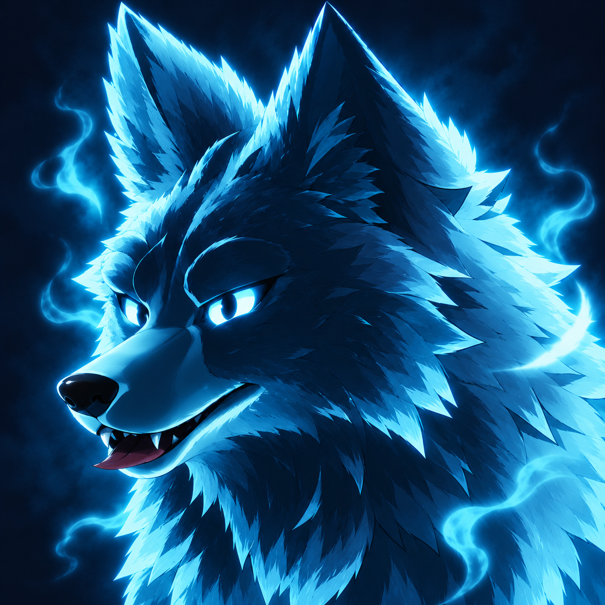
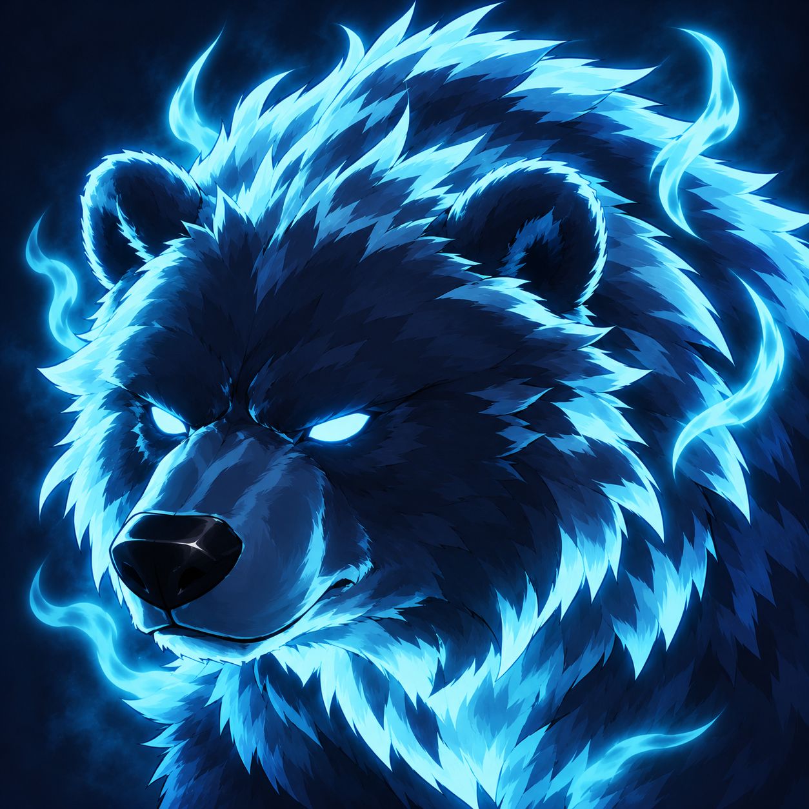
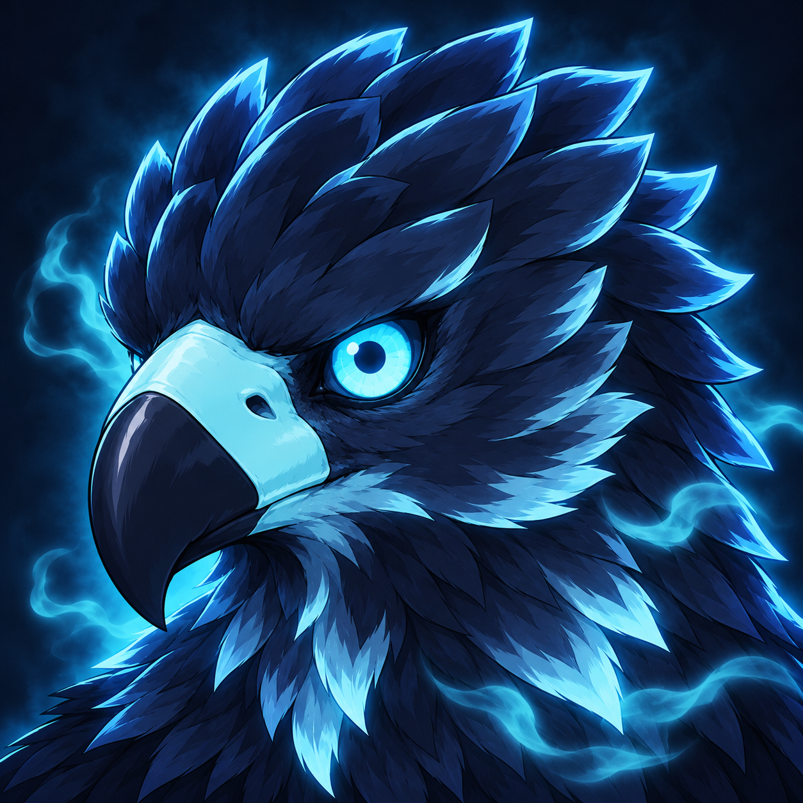
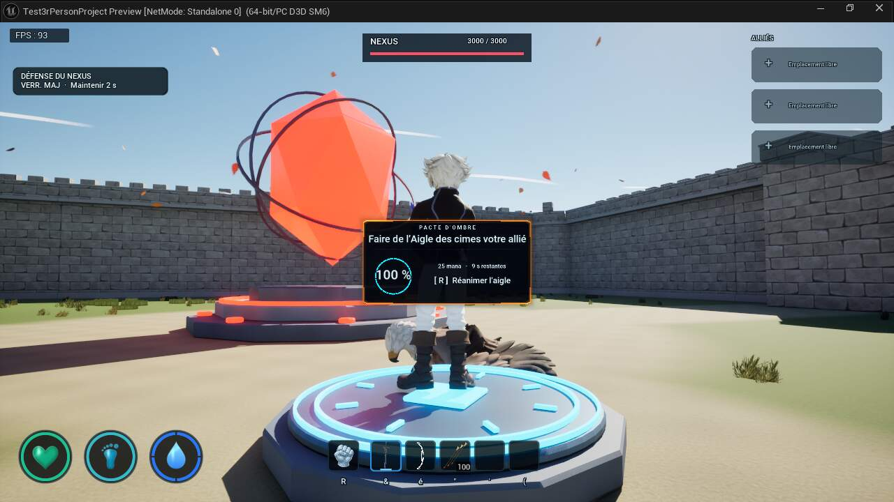
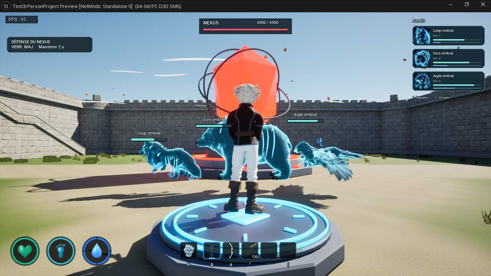
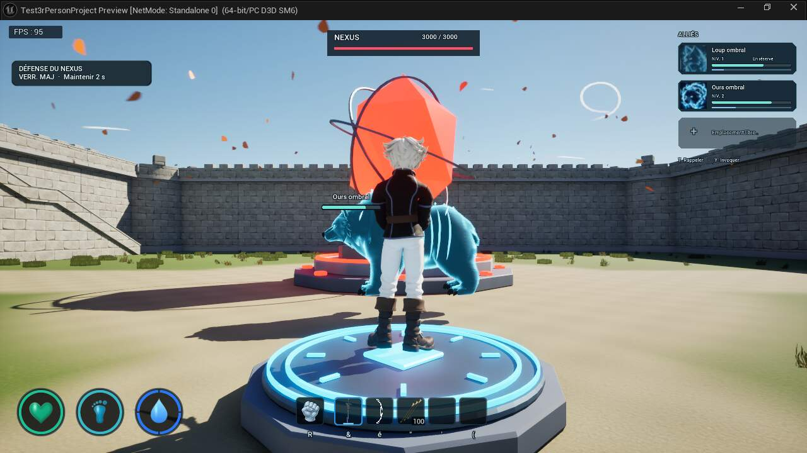

Portraits ombraux · méthode
Dans cette page
État courant · V27
Version V27 · 23 octobre 2026. Les précisions ci-dessous constituent l’état courant ; les campagnes et versions précédentes restent consultables dans le volet historique.
Maintenir Pivoter entraîne progressivement la plateforme et le mob ensemble, autour du centre des appuis ; le décor et les lumières restent fixes. Maintenir Zoom + ou Zoom − zoome continuellement ; les boutons sont grisés aux limites. Le cadrage coordonne la crypte et le sujet, sans modifier la taille de l’allié dans le monde. La seule nouvelle chaussure plate est affichée devant Déplacement. Portraits, cadres dorés, badges KO rouges, dégâts compacts, fissures cyan et ambiance de crypte sont conservés.
Organisation, captures et validation V27 · Gestion des ombres
Guide détaillé et historique antérieur à V27
DIRECTION ARTISTIQUE APPROUVÉE · 22 OCTOBRE 2026
Portraits ombraux : références et méthode
Le trio choisi pour l’interface et une méthode pour décliner les prochains compagnons dans le même style.
1. Les trois références approuvées
La nouvelle référence artistique est une série de portraits illustrés en style animé, principalement cadrés sur la tête. Ces dessins remplacent la direction des vignettes photographiées V19 dans l’interface ; les captures du jeu restent la référence d’identité des modèles.

Loup ombral
Variante A, bouche entrouverteMuseau allongé, oreilles triangulaires, regard vif et canines visibles.

Ours ombral
Variante B, vue plus frontaleFront large, petites oreilles rondes, museau court et massif ; regard puissant.

Aigle ombral
Version corrigée V2Bec crochu d’aigle, œil cyan lisible et plumes de la tête cohérentes avec son identité.
Trio approuvé et importé. Loup A bouche entrouverte, ours B plus frontal et aigle corrigé V2. Les simulations à 44 et 88 pixels servent à juger la lisibilité ; elles restent distinctes des captures natives du HUD.
2. Direction artistique commune
- Visage dominant, gros plan tête et un peu de cou ; silhouette identifiable immédiatement. Préserver les proportions et les traits caractéristiques du modèle utilisé dans le jeu.
- Illustration fantasy/anime : trait sombre propre, ombrages nets, volumes lisibles et détail de poils ou de plumes concentré sur les contours et les zones utiles.
- Matière noir bleuté et bleu nuit ; lumière cyan glacé sur les bords, yeux expressifs et quelques volutes spectrales. Le cyan souligne le visage sans le blanchir.
- Fond sombre simple, sans décor chargé. Le visage doit se détacher en petit format sans ajouter un cadre ou un badge dans l’image.
- Expression propre à chaque créature : loup vif avec bouche entrouverte ; ours massif plus frontal ; aigle au bec et au regard corrigés. La cohérence de série ne demande pas des anatomies identiques.
Portée : une illustration d’interface. Les corps, squelettes, pelages, plumes, matériaux et animations des créatures en jeu ne changent pas pour produire ces portraits.
3. Règles de production
- Conserver le fichier généré original et son cadrage carré. Les trois masters approuvés actuels mesurent 1 254 × 1 254 pixels ; ne pas les rééchantillonner pour le seul rangement des sources.
- Garder le texte du nom, le niveau, les jauges, les bordures et l’état de sélection dans l’interface. Aucun de ces éléments ne doit être peint dans le portrait.
- Éviter les yeux noyés dans la lumière, le pelage transformé en tache blanche, les particules devant le visage, les museaux raccourcis ou allongés et les becs d’une autre espèce.
- Vérifier les visages à 44 × 44 pixels, puis à 88 × 88 pixels et en plein format. Sur la page, ces tailles sont des pixels CSS à zoom de navigateur 100 %.
- Archiver séparément les variantes écartées. Une image initiale, une proposition B et le choix final ne doivent jamais partager une appellation « actuelle » ambiguë.
- Préserver une copie récupérable des textures actives avant import, puis créer ou réimporter uniquement les textures d’interface prévues ; ne pas réimporter le modèle de la créature.
4. Méthode réutilisable pour un nouveau mob
- Identifier le vrai modèle. Ouvrir l’espèce et sa variante ombrale réellement utilisées. Prendre une capture de la tête en jeu ou dans une scène fidèle pour fixer l’anatomie, les volumes, les yeux et les ornements. Une ancienne galerie ne suffit pas à désigner l’asset courant.
- Donner deux rôles distincts aux références. La capture 3D sert à l’identité du nouveau mob ; les trois portraits approuvés V21 servent au style. Fournir les images elles-mêmes au générateur
image_gen, en précisant cette priorité. - Renseigner le gabarit ci-dessous. Décrire les traits qui distinguent l’espèce, l’angle et l’expression ; garder les règles communes de cadrage, palette et contraste.
- Comparer plusieurs propositions si nécessaire. Examiner en premier la forme du visage et sa reconnaissance à petite taille, puis la cohérence avec le trio. Corriger la variante concernée avec les références ; éviter de régénérer les portraits déjà approuvés.
- Faire choisir le résultat. Conserver le nom de la variante retenue, les références utilisées, la consigne exacte de génération ou de correction, la date et l’empreinte du master. Une proposition générée ne devient pas automatiquement une texture active.
- Préparer l’import avec retour récupérable. Conserver le master intact. Pour cette série, les textures V21 ont un package distinct sous
/Game/ElemntsForGame/Allies/Interface/Portraits/V21. Les anciennes textures V19 restent disponibles en archive ou fallback. - Contrôler l’interface en situation réelle. Vérifier les références de texture, le nom et l’espèce, les tailles, le filtrage et les mipmaps, puis les cartes d’alliés en solo et sur les interfaces réseau réellement ciblées. Vérifier menu, pause, rappel et redéploiement sans conclure à partir de cette seule page.
- Mettre à jour la fiche et les preuves. Distinguer « style approuvé », « import effectué », « branché dans le HUD » et « validé en jeu », puis documenter les variantes remplacées.
5. Gabarit de consigne à réutiliser
Remplacer les champs entre crochets et joindre la capture d’identité ainsi que les trois références de style. Ce gabarit est une base pour les futurs mobs ; les consignes exactes des images déjà retenues restent conservées dans leur journal de génération.
Créer un seul portrait carré 2D de [NOM / ESPÈCE], compagnon ombral de Fallen Necromer. RÉFÉRENCES ET PRIORITÉ Image 1 : capture du vrai modèle 3D en jeu. Elle fixe l’identité de l’espèce, les proportions de la tête, le museau ou le bec, les oreilles ou la crête, et les signes distinctifs. Images 2 à 4 : portraits approuvés du loup, de l’ours et de l’aigle V21. Elles fixent le trait, le rendu animé, la palette et la lisibilité de la série. Ne pas transférer l’anatomie d’un autre animal. CADRAGE ET STYLE Gros plan serré sur la tête, avec seulement un peu de cou. [ANGLE SOUHAITÉ] ; expression [EXPRESSION]. Tête immédiatement identifiable à 44 px. Illustration fantasy/anime soignée, contour sombre assuré, ombrages nets, grandes masses lisibles et accents fins de poils ou de plumes. Noir bleuté / bleu nuit pour la matière, lumière de bord cyan glacé, quelques volutes spectrales élégantes et fond bleu nuit discret. IDENTITÉ À CONSERVER [FORME DU CRÂNE, MUSEAU/BEC, OREILLES/CRÊTE, PROPORTIONS ET SIGNES DISTINCTIFS]. Préserver les yeux et leur nombre visible selon l’angle. Pour un aigle : bec véritablement crochu et proportions aviaires ; ne pas créer un bec de perroquet. Pour un ours : petites oreilles rondes et museau massif ; ne pas allonger le museau comme celui du loup. LIVRABLE Une seule image carrée, source en pleine résolution native. Pas de texte, cadre, badge, interface, logo ou assemblage. Pas de corps complet, d’arme ni d’accessoire inventé. Garder la matière sombre et les traits du visage lisibles malgré les lueurs. Aucune modification du modèle 3D ou des matériaux du jeu. Décliner l’identité de cette nouvelle espèce dans la même série visuelle, sans copier la tête d’un autre compagnon.
6. Intégration et vérifications V21
Cartes et compteur FPS
Cartes ALLIÉS compactes de 196 × 52 pixels, portraits de 44 pixels à la référence 720p, groupe remonté en haut à droite. Trois emplacements, noms ombraux, niveau, vie et expérience ; état en réserve et place libre conservés.
Le compteur FPS est en haut à gauche, indépendant du HUD. Il reste présent dans le menu principal et pendant la pause ; son calcul suit le temps réel et continue quand la simulation est arrêtée. L’ancien compteur solo est désactivé en mémoire pour éviter le doublon.
Les masters 1 254 × 1 254 restent intacts. Unreal construit des textures UI sRGB de 512 × 512 avec mipmaps SHARPEN0, filtre trilinear et limite max512. Les trois nouveaux packages T_LoupOmbral_AnimeV21, T_OursOmbral_AnimeV21 et T_AigleOmbral_AnimeV21 sont sous /Game/ElemntsForGame/Allies/Interface/Portraits/V21 ; les textures V19 sont préservées en fallback.
Vérifications et portée
37 contrôles solo sur une fixture de trois alliés possédés et 12 contrôles du vrai menu principal réussis. Les textures V21 chargées au démarrage et leurs dérivés 512 × 512 ont été contrôlés. La réserve est simulée par visibilité/emplacement ; ce lot ne rejoue pas le recrutement ou le rappel T/Y.
Interface réseau : 22 contrôles réussis dans deux PIE locales, hôte et invité. À la demande de Florian, le panneau « Retour au menu »/Tab est ancré en bas à droite, séparé des cartes alliées en haut à droite, y compris en petit viewport. Les trois textures V21 sont observées chargées au démarrage ; les portraits hôte/invité sont inspectés dans les six JPEG natifs et leurs références sont relues dans les sources LoadPortraits et Card.Portrait. Les tableaux privés du HUD sont inaccessibles depuis Python : leur lecture directe n’est pas annoncée comme une preuve. Appartenance répliquée, réserve, place libre, menu et compteur FPS sont contrôlés. Les alliés appartiennent à une fixture créée par le serveur : ce lot ne valide ni le recrutement de l’aigle en réseau, ni son combat. Aucun essai Steam entre deux PC, test de latence ou benchmark de performances.
Quatre tests Automation natifs réussis : limites des cartes, compacité, séparation du panneau en bas à droite et textes selon l’espèce réelle. Le test de séparation couvre neuf résolutions ; il vérifie les calculs de disposition, distinctement des captures réelles hôte/invité.
Les textes du Pacte d’ombre suivent la véritable créature ciblée : « Réanimer le loup », « Réanimer l’ours » ou « Réanimer l’aigle », avec titre adapté au nom. Leur mesure et leur centrage utilisent le même texte. Les 26 contrôles de la vraie fonction Blueprint InstructionRecrutement passent sur les trois cadavres réels ; les avertissements de portée, réanimation en cours, trois alliés maximum, mana insuffisant et panneau non visé sont conservés, ainsi que le retour vide pour une cible invalide. Ces appels utilisent des entrées de fixture et ne déclenchent pas de recrutement.


La caméra protège la vue locale quand son objectif entre dans le volume du personnage : corps, vêtements, cheveux et équipement proches sont filtrés ensemble, puis leurs drapeaux antérieurs sont restaurés après dégagement. Le retrait contre un mur reste immédiat, le retour amorti ; une sonde démarrant dans le décor recherche une position sûre. Caméra solo : 39/39 contrôles réussis, 24 poses normales côté cour sans chevauchement de la caméra et protection active dans 16 d’entre elles. Les flancs extérieurs dans les remparts et le cas 15 avant/après restent des diagnostics contraints, exclus des preuves de déplacement normal. Aucune validation de caméra réseau ni mesure globale de FPS dans ce banc.
Module UnrealEditor-AvatarRuntime-HudPortraitsV21d.dll activé et état final vérifié. Aucun benchmark de performances ni essai Steam entre deux PC dans ces contrôles.
Import des trois textures · Solo 37/37 · Menu 12/12 · Automation 4/4 · Captures natives de cartes · Réseau · Caméra · Textes de recrutement · Activation finale · Comparaison caméra et limites · Six captures réseau inspectées.
Deux captures natives de la vraie fenêtre PIE, interface Slate comprise, montrent les trois cartes puis l’état en réserve avec un emplacement libre.




7. Historique et fichiers de référence
La V19 utilisait des captures fidèles des alliés dans la cour, après une première passe de studio écartée. Cette étape reste utile pour retrouver l’identité 3D et l’aspect réel des créatures. La V21 adopte volontairement une interprétation illustrée pour les portraits d’interface ; elle ne remplace pas le rendu des modèles en jeu.
Galerie V21 et lecture à 44/88 pixels · Portraits capturés V19, historiques · État d’intégration.